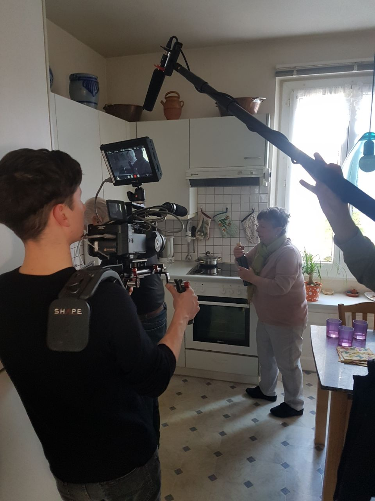

Ce reportage visant a montrer la conscience écologique chez les seniors fut malheureusement interrompu par le covid-19.
Backstage


Ce reportage visant a montrer la conscience écologique chez les seniors fut malheureusement interrompu par le covid-19.